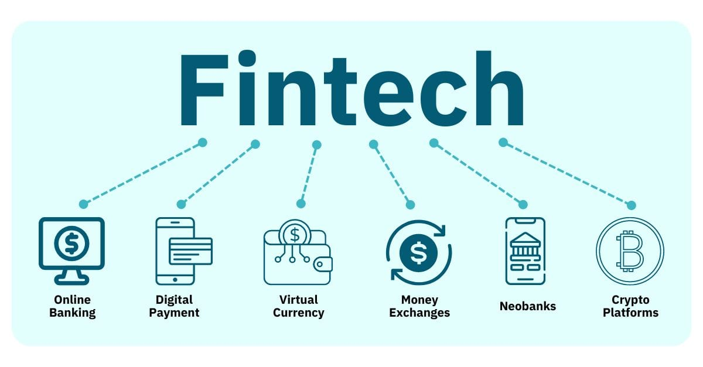

The world of finance is undergoing a digital revolution, and at the heart of this transformation lies financial technology, or fintech. From mobile payments and robo-advisors to blockchain and decentralized finance (DeFi), fintech is reshaping how we interact with money.
I created this website to explore the innovations, challenges, and opportunities in fintech. As someone passionate about both finance and technology, I find it fascinating how algorithms, data, and design are converging to democratize access to financial services.
Through this site, I’ll share insights, resources, and personal reflections on the fintech landscape. Whether you're a student, a professional, or just curious about the future of finance, I hope you find something here that sparks your interest.
